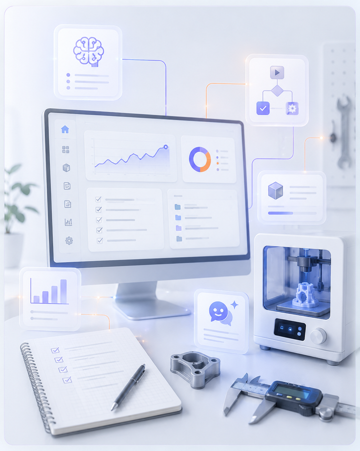

3D-Druckauftrag
Individuelle Kunststoffteile und Rapid Prototyping im FDM-Verfahren. Auf der Detailseite erfährst du alles zu Materialien, Abläufen und typischen Anwendungen.
Neu in der Warenschmiede
Aktuelle Werkzeuge aus der Warenschmiede – lokal, online oder direkt als Download nutzbar.
Ich begleite dich von der Idee bis zum fertigen Teil – transparent, regional verwurzelt und verständlich erklärt. Der Schwerpunkt liegt auf FDM-3D-Druck, passender CAD-Unterstützung sowie ruhiger PC-Hilfe in Donaueschingen und dem Schwarzwald-Baar-Kreis.
Individuelle Kunststoffteile und Rapid Prototyping im FDM-Verfahren. Auf der Detailseite erfährst du alles zu Materialien, Abläufen und typischen Anwendungen.

Von der Skizze bis zur belastbaren Datei: Auf der neuen Seite erfährst du, wie Konstruktion, Feedbackschleifen und Prototypentests ablaufen – inklusive Praxisbeispiel.

Geduldige Unterstützung bei Computerfragen – vor Ort, per Fernwartung oder als Bring-in-Service. Auf der Detailseite liest du Beispiele, Ablauf und die Optionen für Hausbesuche.

Neben Auftragsdrucken und CAD-Services entwickle ich eigene Tools und diese Plattform. Dabei setze ich auf moderne KI-Unterstützung (Gemini, ChatGPT, Jules, Codex), um effiziente Lösungen zu schaffen, die sonst nur großen Teams möglich wären.
Hinweis: Die alten Tools „Zeiterfassung“ und „Warenschmiede 3D-Druck Suite“ bleiben während der Übergangsphase weiterhin erreichbar. Sie werden bis spätestens Ende 2026 durch die aktuellen Plus-Versionen ersetzt.
Ausgewählte Referenzen und Fallstudien folgen in Kürze. Wenn du vorab Einblicke möchtest, schreib mir – ich teile gerne Beispiele.
In Vorbereitung: Einblicke in laufende Projekte, einfache Downloads und mehr Beispiele aus der Werkstatt. Bis dahin findest du im Abschnitt Projektarbeit & Eigenentwicklungen bereits eine Auswahl aktueller Entwicklungen.
Links: Start → 3D-Druck Suite
Links: Online starten → Anleitung
Jetzt verfügbar! Zum Download
Hinweis: Die alten Tools „Zeiterfassung“ und „Warenschmiede 3D-Druck Suite“ bleiben während der Übergangsphase weiterhin erreichbar. Sie werden bis spätestens Ende 2026 durch die aktuellen Plus-Versionen ersetzt.
Schick mir deine Idee oder Datei direkt per E-Mail oder WhatsApp. Ich antworte meistens am selben Abend.
Deine Angaben nutze ich nur zur Bearbeitung deiner Anfrage. Keine Weitergabe an Dritte.